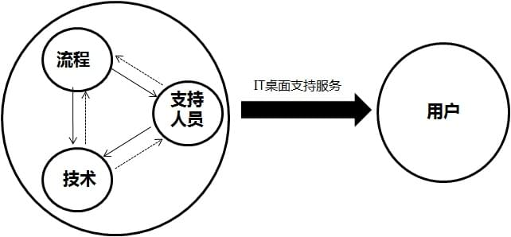

IT外包解决方案
通过规范和流程管理，提高桌面支持的服务质量和用户满意度

1、流程
- 1）设立服务台，提供单一的联系点
- 2）建立标准的安装文档
- 3）提供标准的事件请求单
- 4）建立有效的故障升级处理流程，确保问题得到及时的解决
- 5）定义问题处理的优先级别（问题的重要程度和必须处理完成的时间期限）
- 6）建立问题知识库
2、技术
- 1）简化IT桌面支持环境
- 2）运用IT桌面支持管理系统，对桌面系统进行全面有效的管理
- 3）灵活使用各种工具诊断和排除故障
- 4）综合运用各种诊断和排除故障的方法
3、支持人员
- 1）对服务级别定义有一个清晰的理解；
- 2）树立服务意识，注重与用户的沟通，做到礼貌，热情；
- 2）熟知公司的业务和术语，从用户的角度去考虑对IT桌面支持的需求
- 2）IT 桌面支持人员通过多种方式不断地提高自己的技术水平。
4、用户
- 1）提供较准确的故障描述，从而帮助支持人员较好地解决问题；
- 2）树立对IT 桌面支持人员的信心，出现问题及时主动地寻求他们的帮助；